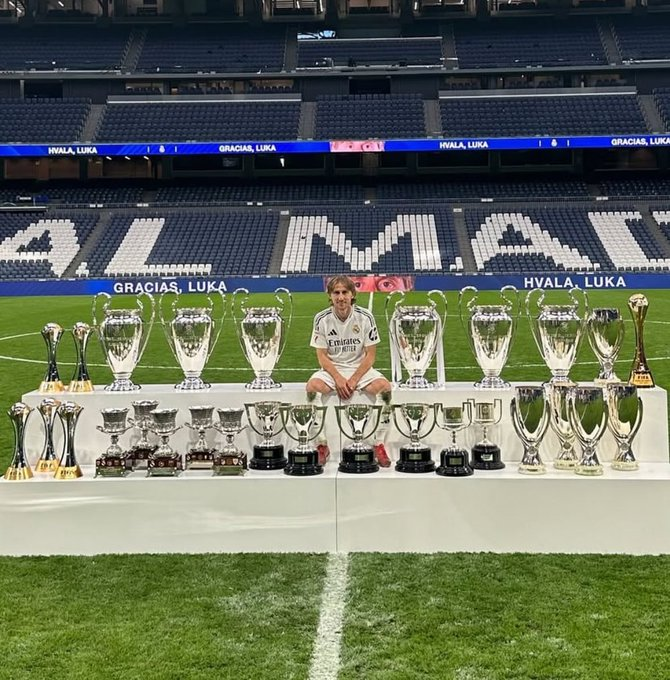
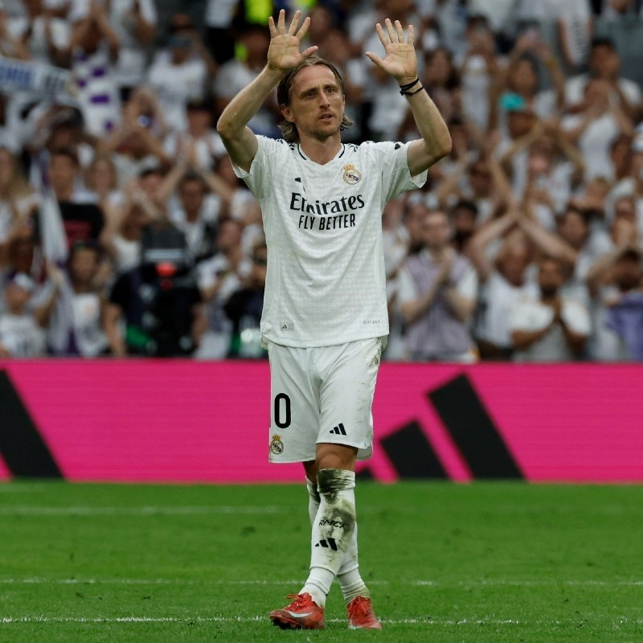
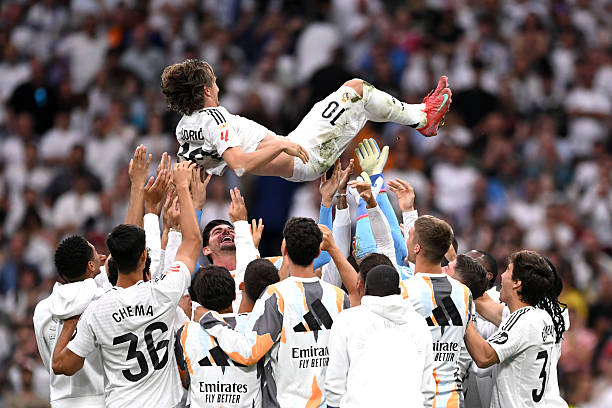

Lukica naš
Luka Modrić nije samo nogometaš — on je simbol upornosti, poniznosti i čiste ljubavi prema igri. Iz djetinjstva obilježenog ratom, došao je do vrha svjetskog nogometa, no nikada nije zaboravio tko je i odakle dolazi. Njegova mirnoća na terenu, elegancija u dodavanju i srce koje ostavlja u svakoj utakmici inspiriraju generacije diljem svijeta. Kada igra Luka, ne gledamo samo nogomet – gledamo poeziju u pokretu. On je vođa bez buke, ratnik s osmijehom, naš kapetan iz Zadra koji je ušao u besmrtnost. Za Hrvatsku, za Real, za sve nas – Luka Modrić je i ostat će pravi G.O.A.T.
- Datum rođenja: 9. rujna 1985.
- Klub: Real Madrid
- Pozicija: Vezni igrač
- Broj nastupa za Real Madrid: 530+
- Golovi za Real Madrid: 39
- Asistencije za Real Madrid: 75+
Najveća postignuća
- Osvojio Ligu prvaka s Real Madridom 5 puta
- Viceprvak svijeta 2018. i brončani 2022. s Hrvatskom
- Dobitnik Zlatne lopte 2018.
- Više od 300 nastupa za Real Madrid




Luka Modrić rođen je 9. rujna 1985. u Zadru, u vrijeme dok je
Hrvatska još bila dio bivše Jugoslavije. Njegovo djetinjstvo
obilježeno je izbjeglištvom tijekom Domovinskog rata, no upravo tada
počinje njegova veza s nogometom — loptu je nosio svuda sa sobom,
igrao gdje god je stigao, a treneri su već tada vidjeli da posjeduje
nešto posebno. Prve ozbiljnije nogometne korake napravio je u NK
Zadru pod vodstvom Tomislava Bašića, koji je bio ključan u njegovom
razvoju i preporučio ga Dinamu Zagreb. Godine 2000., sa svega 15
godina, Luka prelazi u GNK Dinamo Zagreb, klub koji će imati ogroman
utjecaj na njegov profesionalni put. Iako fizički slabiji od
vršnjaka, Modrić je dominirao zahvaljujući nevjerojatnom osjećaju za
igru i tehničkoj perfekciji. Kako bi se dodatno razvio, Dinamo ga
šalje na posudbu u Zrinjski Mostar, gdje postaje najbolji igrač
Premijer lige BiH, a potom i u Inter Zaprešić. Po povratku u Dinamo
2005. godine, postaje nezamjenjiv u prvom sastavu. U tri sezone s
klubom osvaja tri uzastopna naslova prvaka Hrvatske, dva Kupa i
Superkup te bilježi brojne asistencije i golove. Njegove igre u
Dinamu lansirale su ga na europsku scenu. Upravo zahvaljujući
sjajnim nastupima za Dinamo, Modrić 2008. godine prelazi u Tottenham
Hotspur, čime započinje njegov međunarodni uspon, a ostalo je —
povijest. Nakon impresivnih sezona u Tottenhamu, gdje je stekao
status jednog od najboljih veznih igrača Premier lige, Luka Modrić
2012. godine prelazi u Real Madrid za tada značajnih 30 milijuna
eura. Početak u Madridu bio je izazovan — kritičari su ga brzo
otpisivali, a španjolski mediji su ga čak proglasili jednim od
najgorih pojačanja te sezone. No, Modrić je odgovorio na najbolji
mogući način — radom, strpljenjem i briljantnim partijama. Ubrzo je
postao ključna figura u veznom redu, poznat po svojoj viziji,
smirenosti pod pritiskom, savršenoj kontroli lopte i sposobnosti da
diktira tempo igre. S Real Madridom je osvojio pet Liga prvaka,
brojne domaće trofeje i postao srce momčadi koju su krasila velika
imena poput Cristiana Ronalda, Benzeme, Kroosa i Casemira. Vrhunac
njegove karijere dolazi 2018. godine kada, uz sjajne nastupe za Real
i vođenje Hrvatske do finala Svjetskog prvenstva u Rusiji, osvaja
Zlatnu loptu (Ballon d'Or) i prekida dugogodišnju dominaciju Messija
i Ronalda. Luka Modrić je postao prvi Hrvat u povijesti koji je
osvojio ovu prestižnu nagradu.
-
Zrinjski Mostar (posudba) – 2003./04.:
• Nastupi: 22
• Golovi: 8
• Asistencije: Nema točnih podataka
• Nagrade: Igrač sezone u Premijer ligi BiH (2003./04.) -
Inter Zaprešić (posudba) – 2004./05.:
• Nastupi: 18
• Golovi: 4
• Asistencije: 4+ (procjene)
• Nagrade: Pomogao klubu doći do 2. mjesta u HNL-u -
Dinamo Zagreb – 2005.–2008.:
• Nastupi: 112
• Golovi: 31
• Asistencije: 29+
• Trofeji:- Hrvatska Prva liga (3x): 2005./06., 2006./07., 2007./08.
- Hrvatski kup (2x): 2006./07., 2007./08.
- Hrvatski Superkup (2x): 2006., 2008.
-
Tottenham Hotspur – 2008.–2012.:
• Nastupi: 160
• Golovi: 17
• Asistencije: 25+
• Trofeji: —
• Nagrade:- Tottenham Player of the Season: 2010./11.
- Uvršten u PFA Team of the Year (nominacije, ali bez uvrštavanja)
-
Real Madrid – 2012.–danas:
• Nastupi: 534+ (do svibnja 2025.)
• Golovi: 39
• Asistencije: 75+
• Trofeji:- UEFA Liga prvaka (5x): 2013./14., 2015./16., 2016./17., 2017./18., 2021./22.
- La Liga (3x): 2016./17., 2019./20., 2021./22.
- Španjolski Superkup (5x): 2012., 2017., 2020., 2022., 2024.
- Copa del Rey (2x): 2013/14., 2022/23.
- UEFA Superkup (4x): 2014., 2016., 2017., 2022.
- FIFA Svjetsko klupsko prvenstvo (5x): 2014., 2016., 2017., 2018., 2022.
- Zlatna lopta (Ballon d'Or): 2018.
- FIFA The Best: 2018.
- UEFA Player of the Year: 2018.
- Uvršten u FIFPro World XI: 6 puta (2015–2022.)
- Najbolji veznjak Lige prvaka (2x): 2016./17., 2017./18.
Luka Modrić je 2018. godine dosegnuo vrhunac svoje karijere kada je
osvojio prestižnu Zlatnu loptu (Ballon d’Or), čime je postao prvi
hrvatski nogometaš kojem je to pošlo za rukom. Te iste godine
izabran je i za FIFA-inog najboljeg igrača svijeta te UEFA-inog
igrača godine, nadmašivši dotadašnju dominaciju Messija i Ronalda.
Njegova izdanja na Svjetskom prvenstvu u Rusiji, gdje je Hrvatsku
vodio do povijesnog finala, zapečatila su njegov status svjetske
nogometne ikone.
S Real Madridom je postigao ono o čemu većina igrača može samo sanjati – čak pet naslova UEFA Lige prvaka, pri čemu je bio ključan član veznog reda u svakom od tih trijumfa. Osim srebra 2018., Modrić je s Hrvatskom osvojio i broncu na Svjetskom prvenstvu u Kataru 2022., dodatno potvrdivši kontinuitet uspjeha na najvišoj razini.
Njegov stil igre, prepoznatljiv po mirnoći, inteligenciji, preciznim dodavanjima i neumornoj borbenosti, postao je uzor mladim nogometašima diljem svijeta. Nije bio samo osvajač trofeja, već i simbol liderske tišine – vođa koji nadahnjuje djelima, a ne riječima.
S Real Madridom je postigao ono o čemu većina igrača može samo sanjati – čak pet naslova UEFA Lige prvaka, pri čemu je bio ključan član veznog reda u svakom od tih trijumfa. Osim srebra 2018., Modrić je s Hrvatskom osvojio i broncu na Svjetskom prvenstvu u Kataru 2022., dodatno potvrdivši kontinuitet uspjeha na najvišoj razini.
Njegov stil igre, prepoznatljiv po mirnoći, inteligenciji, preciznim dodavanjima i neumornoj borbenosti, postao je uzor mladim nogometašima diljem svijeta. Nije bio samo osvajač trofeja, već i simbol liderske tišine – vođa koji nadahnjuje djelima, a ne riječima.